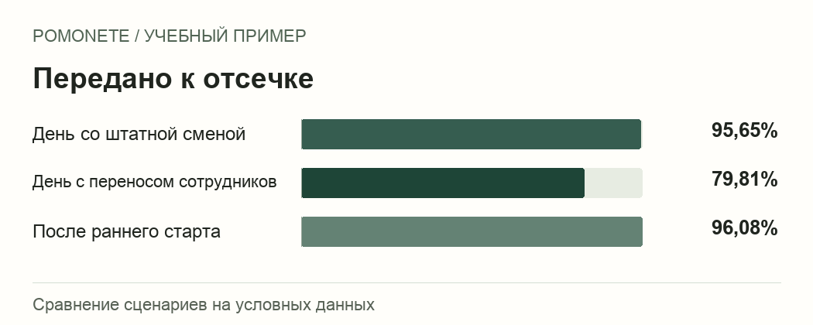

Как измерить долю передачи заказов к отсечке на Яндекс Маркете
Метод для селлера, который сравнивает выполнение конкретного рабочего срока по сменам.
В магазине полок без доступа к статусу фактической передачи сложно увидеть, где возникает очередь. Селлер Яндекс Маркета хочет связать обещание, работу смены и время перевода в доставку. Доля переданных к общему сроку покажет, как сработало конкретное окно.
Что брать в знаменатель
Соберите заказы с нужным сроком на основании рабочего календаря. В числитель включайте события с отмеченной фактической передачей. Отдельно исключайте документированные отмены, если такой отбор закреплён заранее, чтобы показатели разных дат были сравнимыми.
Чтобы пересобрать расчёт «Передано к отсечке» для своего магазина, перенесите в него исходные числа. В формуле A обозначает «передано в пределах срока», B обозначает «заказы с этим сроком». Деление отвечает за долю, умножение на 100 переводит её в проценты. При нулевом знаменателе долю оставляют пустой. Запишите рядом период и охват каждого среза. Если для одной строки известна только оценка, оставьте пояснение непосредственно рядом с ней: по итоговой цифре источник уже не восстановить.
Передано к отсечке = A ÷ B × 100
| Условие | Передано в пределах срока | Заказы с этим сроком | Передано к отсечке |
|---|---|---|---|
| День со штатной сменой | 88 | 92 | 95,65% |
| День с переносом сотрудников | 83 | 104 | 79,81% |
| После раннего старта | 98 | 102 | 96,08% |

В сценарии «День со штатной сменой» в формулу подставляем передано в пределах срока = 88, заказы с этим сроком = 92. Получается 95,65%. Заказы заранее разделили по сроку. Результат берём из отметки фактической передачи.
В сценарии «День с переносом сотрудников» в формулу подставляем передано в пределах срока = 83, заказы с этим сроком = 104. Получается 79,81%. Часть команды ушла на другой участок до начала окна передачи.
В сценарии «После раннего старта» в формулу подставляем передано в пределах срока = 98, заказы с этим сроком = 102. Получается 96,08%. Несколько заказов пришло позже обычного, но обработку готовых начали заранее.
Если «День со штатной сменой» взять за исходную точку, «День с переносом сотрудников» меняет показатель «передано к отсечке» на -15,84 п. п., а «После раннего старта» на 0,43 п. п.. Между двумя последними строками разница составляет 16,27 п. п. при вычитании второй из третьей. Смотрите, какой именно вход изменился между строками. Если менялись объём и условия одновременно, итог сравнения относится ко всему сочетанию.
От меньшего результата до большего в таблице 16,27 п. п.. При переходе из «День с переносом сотрудников» со значением 79,81% в «После раннего старта» со значением 96,08% условия заданы явно. Этот интервал описывает три построенных случая, а для вероятности исходов нужна история. В рабочей записке полезно назвать минимальное значение, при котором сохранится ваше решение. Если такой порог попадает внутрь интервала, подтвердите спорный параметр до того, как менять процесс.
Почему нельзя брать дату упаковки
Товар может быть упакован за час до дедлайна, а перевозчику передан позже. Сохраните отметки сборки, готовности и факта передачи в разных столбцах. Тогда видно, какая очередь влияла на попадание в срок.
У сценария «День с переносом сотрудников» есть входы: передано в пределах срока, заказы с этим сроком. Для каждого впишите, где взять факт и с каким временным лагом он поступит. Опорой будут журнал склада и временные отметки заказов. Если один источник обновляется быстрее другого, зафиксируйте общий момент доступности. При существенном разрыве покажите последние данные отдельным оперативным значением.
Для сравнения выведите короткий журнал с временем поступления работы, началом обработки и моментом передачи. Длительность операции измеряют на нескольких сменах, чтобы короткая спокойная неделя не стала единственной нормой. Товары разных размеров и сложность сборки записывают отдельными группами. На узком участке неравномерность важна так же, как общая загрузка: два одинаковых дневных итога могут оставить разный хвост необработанных заказов.
Что сильнее всего меняет результат
От результата 79,81% в строке «День с переносом сотрудников» пересчитайте несколько вариантов. Проверьте «передано в пределах срока», «заказы с этим сроком». Прибавка около десятой доли на вход показывает реакцию за один шаг. Целые числа сохраняем целыми. Для долей, где прирост выводит числитель за предел базы, пробуем уменьшение. Все остальные параметры при каждой подстановке сохраняются.
- «Передано в пределах срока» меняется с 83 на 91. При прежних остальных входах получается 87,5%, сдвиг составляет 7,69 п. п..
- «Заказы с этим сроком» меняется с 104 на 114. При прежних остальных входах получается 72,81%, сдвиг составляет -7 п. п..
Больше всего изменила итог подстановка «передано в пределах срока». Отклонение составило 7,69 п. п.. До сбора новых данных оцените, насколько правдоподобен такой шаг. Например, расход может подтверждаться документом, а объём пока наблюдается лишь частично. Уточняйте прежде всего те входы, где одновременно возможен заметный сдвиг и мало подтверждений.
Пересчитайте показатель, разделив крупные упаковки и мелкие отправления. Если ухудшение сосредоточено в одной группе, единый перенос смены может быть лишним. Вынесите отдельный режим на несколько товарных позиций и проверьте остальные поставки по прежнему правилу.
На что расходовать дополнительное время
На следующей неделе добавьте короткий ранний период для скопившейся очереди. Проверьте, вырос ли объём по тем же типам заказов и сколько минут заняла подготовка. Если на отгрузке осталось старое узкое место, отдельно договоритесь о графике передачи.
Полезно раз в несколько смен собрать пакет отклонений и приложить отметки о причинах. У одного опоздания бывает несколько объяснений, и назначать его первому видимому участку рискованно. Если временный ресурс перемещали между зонами, включите в расчёт, где исчезли эти часы. После пилота проверьте верхний хвост длительности и число заказов, которые перешли за срок.
Для управленческой встречи подготовьте два небольших примера из рабочих записей. Первый сверяет «передано к отсечке» при базовых условиях «День со штатной сменой». Второй берёт изменившуюся строку и объясняет, какой источник исправлен. Селлеру Яндекс Маркета будет проще повторить расчёт на новой группе, если видны исходные значения, дата анализа и момент, когда итог станет достаточно точным для решения.